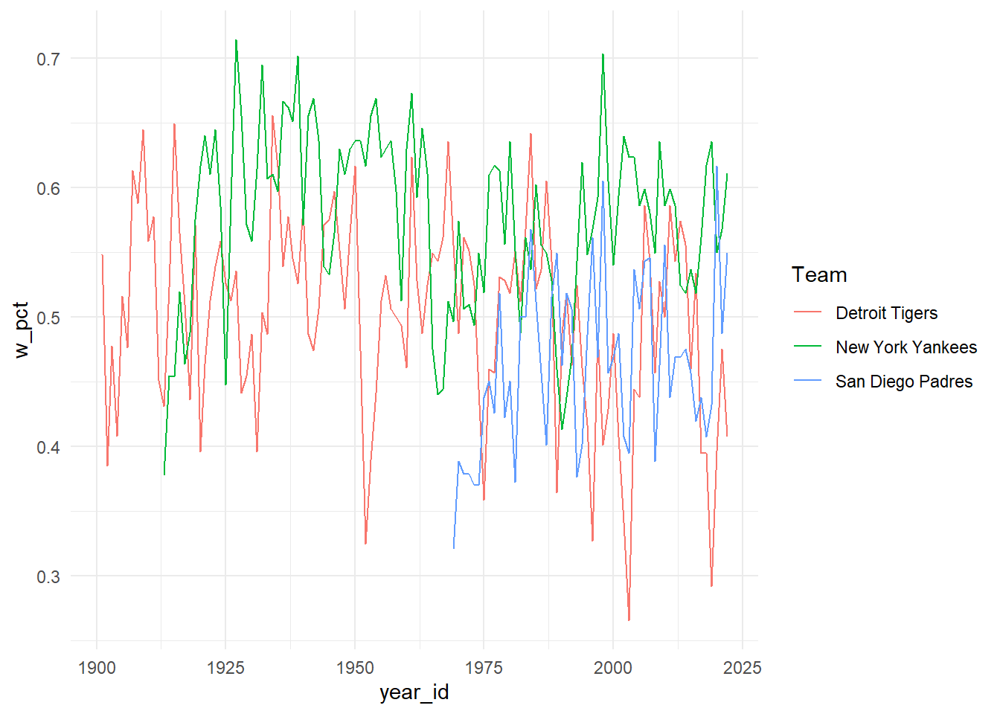

Code
#install.packages("Lahman")
library(rio)
library(here)
library(tidyverse)
library(Lahman)
library(janitor)Key
Install and load the package {Lahman}, which will give you access to the Teams data.
name, yearID, W, L, R, RA. These 5 variables correspond to the team name, the year, wins, losses, runs scored, and runs allowed).teams <- Teams %>%
janitor::clean_names()
cubs <- teams %>%
filter(name == "Chicago Cubs" & year_id >= 1980) %>% # Only one team (your choice) & data from 1980 to present
select(name, year_id, w, l, r, ra) #Includes 5 columns: name, yearID, W, L, R, RA
# Create a new variable corresponding to the winning percentage for the team you chose over time
cubs <- cubs %>%
mutate(w_pct = w / (w + l))\[w_{pct} = \frac{wins}{wins + losses}\] * Order by winning percentage: Least to greatest * Order by winning percentage: Greatest to least * Compute the mean and standard deviation of winning percentage
name year_id w l r ra w_pct
1 Chicago Cubs 1981 38 65 370 483 0.3689320
2 Chicago Cubs 2012 61 101 613 759 0.3765432
3 Chicago Cubs 1980 64 98 614 728 0.3950617
4 Chicago Cubs 2000 65 97 764 904 0.4012346
5 Chicago Cubs 2006 66 96 716 834 0.4074074
6 Chicago Cubs 2013 66 96 602 689 0.4074074
7 Chicago Cubs 1999 67 95 747 920 0.4135802
8 Chicago Cubs 2002 67 95 706 759 0.4135802
9 Chicago Cubs 1997 68 94 687 759 0.4197531
10 Chicago Cubs 1994 49 64 500 549 0.4336283
11 Chicago Cubs 1986 70 90 680 781 0.4375000
12 Chicago Cubs 1983 71 91 701 719 0.4382716
13 Chicago Cubs 2011 71 91 654 756 0.4382716
14 Chicago Cubs 2021 71 91 705 839 0.4382716
15 Chicago Cubs 1982 73 89 676 709 0.4506173
16 Chicago Cubs 2014 73 89 614 707 0.4506173
17 Chicago Cubs 2022 74 88 657 731 0.4567901
18 Chicago Cubs 2010 75 87 685 767 0.4629630
19 Chicago Cubs 1996 76 86 772 771 0.4691358
20 Chicago Cubs 1987 76 85 720 801 0.4720497
21 Chicago Cubs 1988 77 85 660 694 0.4753086
22 Chicago Cubs 1990 77 85 690 774 0.4753086
23 Chicago Cubs 1985 77 84 686 729 0.4782609
24 Chicago Cubs 1991 77 83 695 734 0.4812500
25 Chicago Cubs 1992 78 84 593 624 0.4814815
26 Chicago Cubs 2005 79 83 703 714 0.4876543
27 Chicago Cubs 1995 73 71 693 671 0.5069444
28 Chicago Cubs 2009 83 78 707 672 0.5155280
29 Chicago Cubs 1993 84 78 738 739 0.5185185
30 Chicago Cubs 2019 84 78 814 717 0.5185185
31 Chicago Cubs 2007 85 77 752 690 0.5246914
32 Chicago Cubs 2001 88 74 777 701 0.5432099
33 Chicago Cubs 2003 88 74 724 683 0.5432099
34 Chicago Cubs 2004 89 73 789 665 0.5493827
35 Chicago Cubs 1998 90 73 831 792 0.5521472
36 Chicago Cubs 2020 34 26 265 240 0.5666667
37 Chicago Cubs 2017 92 70 822 695 0.5679012
38 Chicago Cubs 1989 93 69 702 623 0.5740741
39 Chicago Cubs 2018 95 68 761 645 0.5828221
40 Chicago Cubs 1984 96 65 762 658 0.5962733
41 Chicago Cubs 2015 97 65 689 608 0.5987654
42 Chicago Cubs 2008 97 64 855 671 0.6024845
43 Chicago Cubs 2016 103 58 808 556 0.6397516 name year_id w l r ra w_pct
1 Chicago Cubs 2016 103 58 808 556 0.6397516
2 Chicago Cubs 2008 97 64 855 671 0.6024845
3 Chicago Cubs 2015 97 65 689 608 0.5987654
4 Chicago Cubs 1984 96 65 762 658 0.5962733
5 Chicago Cubs 2018 95 68 761 645 0.5828221
6 Chicago Cubs 1989 93 69 702 623 0.5740741
7 Chicago Cubs 2017 92 70 822 695 0.5679012
8 Chicago Cubs 2020 34 26 265 240 0.5666667
9 Chicago Cubs 1998 90 73 831 792 0.5521472
10 Chicago Cubs 2004 89 73 789 665 0.5493827
11 Chicago Cubs 2001 88 74 777 701 0.5432099
12 Chicago Cubs 2003 88 74 724 683 0.5432099
13 Chicago Cubs 2007 85 77 752 690 0.5246914
14 Chicago Cubs 1993 84 78 738 739 0.5185185
15 Chicago Cubs 2019 84 78 814 717 0.5185185
16 Chicago Cubs 2009 83 78 707 672 0.5155280
17 Chicago Cubs 1995 73 71 693 671 0.5069444
18 Chicago Cubs 2005 79 83 703 714 0.4876543
19 Chicago Cubs 1992 78 84 593 624 0.4814815
20 Chicago Cubs 1991 77 83 695 734 0.4812500
21 Chicago Cubs 1985 77 84 686 729 0.4782609
22 Chicago Cubs 1988 77 85 660 694 0.4753086
23 Chicago Cubs 1990 77 85 690 774 0.4753086
24 Chicago Cubs 1987 76 85 720 801 0.4720497
25 Chicago Cubs 1996 76 86 772 771 0.4691358
26 Chicago Cubs 2010 75 87 685 767 0.4629630
27 Chicago Cubs 2022 74 88 657 731 0.4567901
28 Chicago Cubs 1982 73 89 676 709 0.4506173
29 Chicago Cubs 2014 73 89 614 707 0.4506173
30 Chicago Cubs 1983 71 91 701 719 0.4382716
31 Chicago Cubs 2011 71 91 654 756 0.4382716
32 Chicago Cubs 2021 71 91 705 839 0.4382716
33 Chicago Cubs 1986 70 90 680 781 0.4375000
34 Chicago Cubs 1994 49 64 500 549 0.4336283
35 Chicago Cubs 1997 68 94 687 759 0.4197531
36 Chicago Cubs 1999 67 95 747 920 0.4135802
37 Chicago Cubs 2002 67 95 706 759 0.4135802
38 Chicago Cubs 2006 66 96 716 834 0.4074074
39 Chicago Cubs 2013 66 96 602 689 0.4074074
40 Chicago Cubs 2000 65 97 764 904 0.4012346
41 Chicago Cubs 1980 64 98 614 728 0.3950617
42 Chicago Cubs 2012 61 101 613 759 0.3765432
43 Chicago Cubs 1981 38 65 370 483 0.3689320 mean_winning_pct sd_winning_pct
1 0.4867853 0.06853359mean and standard deviation of winning percentage for each teamteams %>%
mutate(w_pct = w / (w + l)) %>% # FIRST - compute the winning percentage
group_by(name) %>%
summarize(n = n(),
mean_winning_pct = mean(w_pct, na.rm = TRUE), # compute the average winning percentage for each team
sd_winning_pct = sd(w_pct, na.rm = TRUE)) %>% # compute the standard deviation of winning percentage for each team
arrange(desc(mean_winning_pct)) # Order by highest winning percentage# A tibble: 140 × 4
name n mean_winning_pct sd_winning_pct
<chr> <int> <dbl> <dbl>
1 Boston Red Stockings 5 0.773 0.0911
2 Cincinnati Outlaw Reds 1 0.657 NA
3 Boston Reds 3 0.616 0.0790
4 Providence Grays 8 0.609 0.0855
5 Chicago White Stockings 17 0.609 0.117
6 Cincinnati Red Stockings 8 0.589 0.0640
7 Boston Red Caps 7 0.579 0.0976
8 New York Yankees 110 0.577 0.0685
9 Brooklyn Ward's Wonders 1 0.576 NA
10 Philadelphia Whites 3 0.574 0.0934
# ℹ 130 more rows# Please put the code for the plot in this chunk.
teams %>%
as_tibble() %>%
mutate(w_pct = w / (w + l)) %>%
filter(name == "New York Yankees" |
name == "Detroit Tigers" |
name == "San Diego Padres") %>%
ggplot(aes(year_id, w_pct)) +
geom_line(aes(color = name)) +
theme_minimal() +
labs(
color = "Team"
)
{here} and the package of your choice ({rio}, {readr}, {haven}, {readxl})Hint: For the ais.xlsx data, look at the skip argument within the {readxl} help documentation.
bmi by sport. Output these data as SPSS and EXCEL files.tmathss) scores were more than three standard deviations above or below the corresponding mean. How many rows are in the data now?sex/frl combinations. (I’m asking you to extend what you know here. We haven’t talked explicitly about how to do this yet, but you have seen examples).sex? An frl effect (frl stands for free/reduced lunch, and is a rough proxy for household income)? Is there evidence of an interaction (i.e., that the effect of frl is greater for boys versus girls)? stand_math_mean stand_math_sd stand_rdg_mean stand_rdg_sd
1 2.29625e-16 1 -6.278158e-16 1# A tibble: 4 × 6
# Groups: sex [2]
sex frl stand_math_mean stand_math_sd stand_rdg_mean stand_rdg_sd
<chr> <chr> <dbl> <dbl> <dbl> <dbl>
1 boy no 0.151 0.970 0.148 1.02
2 boy yes -0.330 0.965 -0.358 0.838
3 girl no 0.326 0.962 0.371 1.09
4 girl yes -0.170 0.969 -0.187 0.863